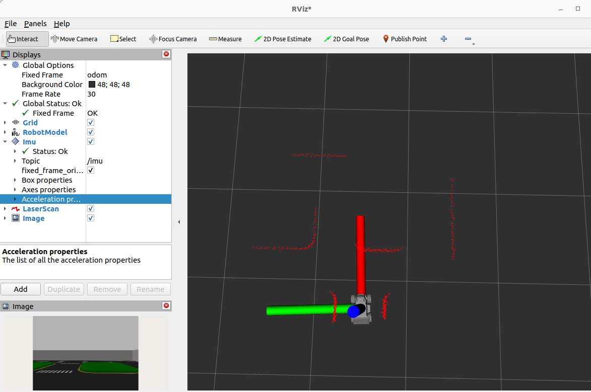

Lecture 7: Sensors — LiDAR, IMU, Depth Camera & Reactive Obstacle Avoidance
7.1LIMO's sensor suite: three families, one TF tree
Every LIMO carries three sensor families that matter for this course. You already met their frames
in Lecture 4's URDF and hung them off base_link in Lecture 5's TF tree — this
lecture is about actually reading the data those frames are attached to, and reacting to it in
real time.
| Sensor | Topic | Message type | Frame |
|---|---|---|---|
| 2D LiDAR | /scan | sensor_msgs/msg/LaserScan | laser_link |
| RGB-D depth camera | /camera/color/image_raw, /camera/depth/image_raw | sensor_msgs/msg/Image | depth_camera_link / depth_link |
| IMU | /imu | sensor_msgs/msg/Imu | imu_link |
All three are just topics — nothing about them is special beyond the fact that they come from hardware (or a simulated hardware plugin in Gazebo) instead of from another node. Anything you already know about subscribing, QoS, and callbacks from earlier lectures applies unchanged. What's new is the shape of the data and the discipline required to use it safely.

This lecture builds toward a single idea: turn raw sensor readings into a decision loop that can override commanded velocity for safety, entirely without a map.
It's tempting to skip straight to "give the robot a map and let it plan." But every planner,
every SLAM algorithm, and every localization filter in this course is built on top of correctly
interpreting these same three message types. Get comfortable with LaserScan,
Imu, and Image now, and Lectures 9-13 will feel like extensions of
this one rather than a wall of new material.
7.2LaserScan deep-dive: anatomy, inf/nan, filtered minimum
The LiDAR spins (physically or, in simulation, via a plugin that emulates the spin) and reports one
distance measurement per beam angle. That whole sweep arrives as a single
sensor_msgs/msg/LaserScan message.
# sensor_msgs/msg/LaserScan
std_msgs/Header header
float32 angle_min # angle of first beam, radians
float32 angle_max # angle of last beam, radians
float32 angle_increment # angular distance between beams, radians
float32 time_increment
float32 scan_time
float32 range_min # minimum reportable distance, meters
float32 range_max # maximum reportable distance, meters
float32[] ranges # one distance per beam
float32[] intensities # one intensity value per beam (optional)
Every element in ranges[] corresponds to a beam angle you can reconstruct as
angle_min + i * angle_increment for index i. Some of those elements will
not be ordinary floats:
| Value | Meaning | What to do with it |
|---|---|---|
inf | Nothing detected within range_max — the beam went off into open space | Filter out before min() |
nan | Invalid reading (sensor error, out-of-spec angle, etc.) | Filter out before min() |
| ordinary float | A real distance in meters, normally between range_min and range_max | Usable directly |
min(scan.ranges) on a raw array will almost always return something meaningless if
any beam reads nan — in Python, comparisons involving nan are not well
ordered, so nan can silently win or lose a min() depending on array
order. And even if no nan is present, treating an inf reading as "0.0
meters away" (a bug some students introduce while trying to be clever with array math) will make
the robot think a wall is right in front of it when the beam actually saw nothing at all. Always
filter both out explicitly before doing math.
Confirm your LiDAR's real range and beam count empirically — never hard-code assumptions from a datasheet or a different robot's config:
Here's the filtered-minimum pattern you'll reuse for the rest of this lecture:
import math
def filtered_min_range(scan_msg):
"""Return the smallest valid (non-inf, non-nan) range, or None if none exist."""
valid = [r for r in scan_msg.ranges
if math.isfinite(r) and scan_msg.range_min <= r <= scan_msg.range_max]
if not valid:
return None
return min(valid)
math.isfinite(r) returns False for both inf and
nan in a single check, which is cleaner than writing separate
math.isnan() and math.isinf() tests. Combine it with the
range_min/range_max bounds check so you also discard any stray reading
outside the sensor's rated envelope.

inf.7.3IMU deep-dive: quaternions, angular velocity, the gravity check
The IMU reports orientation and motion at a much higher rate than the LiDAR sweeps, and it doesn't need to "see" anything external to work — it senses the robot's own body motion directly.
# sensor_msgs/msg/Imu
std_msgs/Header header
geometry_msgs/Quaternion orientation # x, y, z, w
float64[9] orientation_covariance
geometry_msgs/Vector3 angular_velocity # rad/s, about x, y, z
float64[9] angular_velocity_covariance
geometry_msgs/Vector3 linear_acceleration # m/s^2, includes gravity
float64[9] linear_acceleration_covariance
Euler angles (roll, pitch, yaw) are intuitive to read but suffer from gimbal
lock: at certain orientations, two of the three rotation axes align and you permanently
lose a degree of rotational freedom, along with smooth interpolation between orientations. A
quaternion — four numbers (x, y, z, w) — represents any 3D
orientation without that singularity, which is why ROS 2 uses quaternions internally for every
orientation field (including Imu.orientation and every TF transform). You'll convert
to Euler angles only when you need something human-readable, using
tf_transformations.euler_from_quaternion().
angular_velocity is in radians per second, not degrees — a common source of "why is my
robot spinning ten times too fast/slow" bugs when a student copies a formula from a source that used
degrees. linear_acceleration includes gravity, which gives you a cheap and genuinely
useful sanity check: a stationary, level LIMO's IMU should read close to 9.81 m/s²
on whichever axis is "up" in the IMU's own frame (typically Z), and close to zero on the other two.
Before trusting any IMU-driven logic, subscribe once and check
abs(msg.linear_acceleration.z - 9.81) < 0.5 while the robot sits still and level.
If that check fails, something is wrong upstream — a bad mount in the URDF, a Gazebo plugin
misconfiguration, or a genuinely faulty sensor — long before it becomes a mysterious bug in a
later, more complex node.
| Field | Units | Typical use in this course |
|---|---|---|
orientation | quaternion (unitless, normalized) | TF/EKF fusion (Lecture 9) |
angular_velocity | rad/s | Detecting spin, yaw-rate feedback |
linear_acceleration | m/s² | Sanity checks, bump/collision detection |
7.4Image deep-dive (preview): what you can see today
The RGB-D camera publishes color and depth as separate sensor_msgs/msg/Image topics.
The message itself is a raw byte buffer plus enough metadata to interpret it:
# sensor_msgs/msg/Image
std_msgs/Header header
uint32 height
uint32 width
string encoding # e.g. "bgr8" for color, "32FC1" or "16UC1" for depth
uint8 is_bigendian
uint32 step # full row length in bytes
uint8[] data # raw pixel bytes, row-major
data is a flat uint8[] byte buffer — there's no numpy array, no OpenCV
Mat, nothing you can directly call cv2.imshow() on. Reshaping it
correctly (accounting for height, width, step, and
encoding) is exactly what cv_bridge automates — and
that's the whole subject of Lecture 8. For now, resist the urge to hand-roll a byte-reshaping
function; it's easy to get subtly wrong.
What you can already do today, with zero extra code, is look at the live image stream:
bgr8 means 3 bytes per pixel, blue-green-red order (OpenCV's native ordering, which
is why it's the common default rather than rgb8). Depth images are often
32FC1 (one 32-bit float per pixel, meters) or 16UC1 (one 16-bit unsigned
int per pixel, millimeters) — check encoding before writing any pixel-level code,
because the two require completely different unpacking.
Run rqt_image_view against both /camera/color/image_raw and
/camera/depth/image_raw while driving LIMO around an obstacle. Describe in one sentence
how the depth view visually differs from the color view (hint: think about what a grayscale
"distance" image looks like versus a normal photo).
7.5Building a safe-stop node
Recall Lecture 5's closest_lidar_point_answer.py: it subscribed to /scan,
filtered inf/nan, found the index of the minimum range, and published a
visualization_msgs/msg/Marker at that point so you could see it in RViz. The math was
"find the closest thing the LiDAR can see."
We're about to reuse exactly that same math — but instead of drawing a marker, we'll use
the result to make a safety decision. That's the core idea of this section: the same
min()-over-filtered-ranges pattern powers both visualization and control, because both
are just different consumers of "how close is the nearest obstacle right now."
Lecture 5: closest point → Marker → human eyes in RViz.
Lecture 7: closest point → threshold comparison → Twist → motors.
Nothing about the LiDAR processing changes. Only what you do with the number changes.
This is a pattern you'll see again and again in robotics: sensor processing pipelines are usually
reusable across very different downstream purposes.
The safe-stop node subscribes to /scan, and whenever the filtered minimum range drops
below a safety_radius parameter, it publishes a zero Twist on
/cmd_vel — overriding whatever another node (teleop, or your Lecture 6 P-controller)
is currently commanding.
#!/usr/bin/env python3
import math
import rclpy
from rclpy.node import Node
from sensor_msgs.msg import LaserScan
from geometry_msgs.msg import Twist
class SafeStopNode(Node):
def __init__(self):
super().__init__('safe_stop_node')
self.declare_parameter('safety_radius', 0.3)
self.safety_radius = self.get_parameter('safety_radius').value
self.scan_sub = self.create_subscription(
LaserScan, '/scan', self.scan_callback, 10)
self.cmd_pub = self.create_publisher(Twist, '/cmd_vel', 10)
self.get_logger().info(
f'Safe-stop node active. safety_radius = {self.safety_radius:.2f} m')
def filtered_min_range(self, scan_msg):
valid = [r for r in scan_msg.ranges
if math.isfinite(r) and scan_msg.range_min <= r <= scan_msg.range_max]
return min(valid) if valid else None
def scan_callback(self, msg):
closest = self.filtered_min_range(msg)
if closest is None:
return # nothing valid in this sweep — nothing to react to
if closest < self.safety_radius:
self.get_logger().warn(
f'Obstacle at {closest:.2f} m < safety_radius '
f'{self.safety_radius:.2f} m — stopping!')
stop = Twist() # all fields default to 0.0
self.cmd_pub.publish(stop)
def main(args=None):
rclpy.init(args=args)
node = SafeStopNode()
rclpy.spin(node)
node.destroy_node()
rclpy.shutdown()
if __name__ == '__main__':
main()
Because the safe-stop node publishes to the same /cmd_vel topic as teleop or your
controller node, whichever node publishes last wins for that instant — there's no
built-in priority arbitration in a plain ROS 2 topic. In practice this works because the safe-stop
node publishes zero velocity continuously (or at least every time the LiDAR sees danger) while an
obstacle is close, which is usually enough to dominate. A production system would use a proper
command-arbitration layer (twist_mux or similar); for this lecture, understanding the limitation
is the point.
7.6Sector-based reactive obstacle avoidance
A safe-stop node only knows how to stop. To actually get around an obstacle without a map, split the beam array into contiguous sectors — left, front, right — and steer toward whichever side currently has more open space.

ranges[] into three contiguous sectors: each sector's minimum tells you how open that direction is.
It's tempting to just slice ranges[len//3 : 2*len//3] and call it "front." That only
works if angle_min/angle_max happen to span symmetrically around 0
radians and the array is ordered the way you assume. Always derive sector boundaries from the
actual angles you care about, converted to indices via
index = int((angle - angle_min) / angle_increment), and clamp the result to
[0, len(ranges)-1]. Confirm with ros2 topic echo /scan --field angle_min
rather than assuming.
#!/usr/bin/env python3
import math
import rclpy
from rclpy.node import Node
from sensor_msgs.msg import LaserScan
from geometry_msgs.msg import Twist
def angle_to_index(angle, angle_min, angle_increment, n):
idx = int(round((angle - angle_min) / angle_increment))
return max(0, min(n - 1, idx))
def sector_min(ranges, range_min, range_max, start, end):
valid = [r for r in ranges[start:end]
if math.isfinite(r) and range_min <= r <= range_max]
return min(valid) if valid else float('inf')
class SectorAvoidNode(Node):
def __init__(self):
super().__init__('sector_avoid_node')
self.declare_parameter('danger_distance', 0.5) # start avoiding
self.declare_parameter('stop_distance', 0.25) # halt forward motion
self.declare_parameter('forward_speed', 0.15)
self.declare_parameter('turn_speed', 0.6)
self.danger = self.get_parameter('danger_distance').value
self.stop_d = self.get_parameter('stop_distance').value
self.fwd = self.get_parameter('forward_speed').value
self.turn = self.get_parameter('turn_speed').value
self.scan_sub = self.create_subscription(
LaserScan, '/scan', self.scan_callback, 10)
self.cmd_pub = self.create_publisher(Twist, '/cmd_vel', 10)
def scan_callback(self, msg):
n = len(msg.ranges)
# Front is centered on angle 0.0 rad; left/right are the +-60 deg to
# +-90 deg bands either side. Adjust to your LiDAR's real FOV.
front_lo = angle_to_index(-0.35, msg.angle_min, msg.angle_increment, n)
front_hi = angle_to_index(0.35, msg.angle_min, msg.angle_increment, n)
left_lo = angle_to_index(0.35, msg.angle_min, msg.angle_increment, n)
left_hi = angle_to_index(1.4, msg.angle_min, msg.angle_increment, n)
right_lo = angle_to_index(-1.4, msg.angle_min, msg.angle_increment, n)
right_hi = angle_to_index(-0.35, msg.angle_min, msg.angle_increment, n)
front = sector_min(msg.ranges, msg.range_min, msg.range_max, front_lo, front_hi)
left = sector_min(msg.ranges, msg.range_min, msg.range_max, left_lo, left_hi)
right = sector_min(msg.ranges, msg.range_min, msg.range_max, right_lo, right_hi)
cmd = Twist()
if front > self.danger:
# clear ahead: go straight
cmd.linear.x = self.fwd
cmd.angular.z = 0.0
else:
# obstacle ahead: turn toward the side with MORE open space
cmd.angular.z = self.turn if left > right else -self.turn
# still creep forward unless we're dangerously close
cmd.linear.x = 0.0 if front < self.stop_d else self.fwd * 0.4
self.get_logger().info(
f'front={front:.2f} left={left:.2f} right={right:.2f} '
f'-> turning {"left" if left > right else "right"}')
self.cmd_pub.publish(cmd)
def main(args=None):
rclpy.init(args=args)
node = SectorAvoidNode()
rclpy.spin(node)
node.destroy_node()
rclpy.shutdown()
if __name__ == '__main__':
main()This is a fully reactive behavior: no map, no planning, no memory of past obstacles — every command is computed fresh from the current scan. It works well for simple, dynamic, or unmapped environments, but it can get stuck in symmetric dead ends (a doorway-shaped obstacle directly ahead with equal space on both sides) and has no notion of "the goal is over there." Lecture 13's Nav2 costmap-based planning solves exactly those limitations by building and reasoning over a persistent map of the environment — but it also costs far more compute and complexity. Reactive avoidance is the right tool when you need something cheap, fast, and good enough.
| Approach | Needs a map? | Handles dead ends? | Compute cost | Introduced in |
|---|---|---|---|---|
| Sector-based reactive avoidance | No | No | Very low | Lecture 7 (this one) |
| Nav2 costmap + planner | Yes | Yes | Higher | Lecture 13 |
7.7Testing it in Gazebo
Launch a world with obstacles so there's something for the LiDAR to actually see and for your node to actually react to:
Drive LIMO toward a wall or box using teleop, or reuse the on/off or P-controller nodes from
Lecture 6. Watch the terminal running safe_stop_node: as the robot closes within
safety_radius, you should see the warning log fire and the robot halt — even though
teleop is still actively publishing forward commands. Swap in sector_avoid_node and
repeat the same approach at an angle; this time the robot should curve around the obstacle instead
of stopping dead.
potholes_simple.world, LiDAR beams visualized in RViz as it approaches an obstacle.
If you're running this on a physical LIMO instead of simulation, start with a
larger safety_radius and lower speeds than you tested in Gazebo. Simulated
LiDAR is noise-free and has zero communication latency; a real LiDAR has both, plus real motor
inertia means the robot won't stop instantly the moment you publish a zero Twist.
Always test new safety thresholds in simulation first, then re-verify cautiously on hardware with
a hand near the emergency stop.
Add a ros2 topic pub or a small test node that logs the wall-clock time between when
filtered_min_range() first drops below safety_radius and when the robot's
actual linear velocity (from /odom) reaches zero. Is that delay longer or shorter than
you expected? What does it tell you about how much margin safety_radius needs above the
robot's stopping distance at your test speed?
Modify sector_avoid_node to use five sectors instead of three (far-left, left,
front, right, far-right) and steer proportionally to how much more open one side is than the other,
rather than always turning at a fixed turn_speed. Test against a doorway-shaped
obstacle and see whether the finer-grained sectors reduce oscillation compared to the three-sector
version.
7.8Summary, checkpoint & glossary
You now know the exact shape of LIMO's three core sensor messages, the gotchas each one hides
(inf/nan in LaserScan, quaternion orientation and units in
Imu, raw byte buffers in Image), and how to turn a filtered LiDAR sweep
into real-time control decisions — first a simple safe-stop override, then a sector-based avoidance
behavior that steers around obstacles with no map at all.
- You can run
ros2 topic echo /scan --field range_min/range_maxand explain what the numbers mean for your LiDAR. - You can explain why
min()must never be called on unfilteredranges[]. - You can read a live
/imuecho and verify the gravity sanity check on a stationary robot. - You can explain, in one sentence, why quaternions avoid the gimbal-lock problem Euler angles have.
- Your
safe_stop_nodereliably halts LIMO before it contacts an obstacle in Gazebo. - Your
sector_avoid_nodesteers toward the more open side when an obstacle appears ahead. - You can state, without looking it up, why raw
Image.dataisn't usable withoutcv_bridge.
This lecture directly reuses the closest-LiDAR-point math from Lecture 5's
closest_lidar_point_answer.py — same filtering, same min() pattern, now
driving a safety decision instead of an RViz marker. It also lays essential groundwork for
Lecture 8 (where cv_bridge finally unlocks the Image messages you only
viewed today), Lecture 9 (where the IMU's orientation and angular_velocity
get fused with wheel odometry), and Lecture 13 (where Nav2's costmap-based planning replaces
today's purely reactive avoidance with map-aware navigation).
Glossary
- LaserScan
- The
sensor_msgs/msg/LaserScanmessage describing one full LiDAR sweep: angle bounds, angular resolution, range bounds, and a per-beam distance array that may containinfornan. - IMU
- Inertial Measurement Unit; a sensor reporting orientation, angular velocity, and linear acceleration (including gravity) via the
sensor_msgs/msg/Imumessage. - Quaternion
- A four-component
(x, y, z, w)representation of 3D orientation used throughout ROS 2 to avoid the singularities of Euler angles. - Gimbal lock
- The loss of a rotational degree of freedom that occurs with Euler-angle representations when two rotation axes align.
- cv_bridge (preview)
- The ROS 2 package (covered in Lecture 8) that converts
sensor_msgs/msg/Imagemessages to and from OpenCV-compatible arrays. - Reactive control
- A control strategy that computes each command directly from the current sensor reading, with no map, memory, or planning involved.
Common mistakes
- Calling
min()on a rawranges[]array without filteringinf/nanfirst — produces meaningless or dangerously wrong results. - Off-by-one or unverified sector index math — slicing thirds of the array without checking it against real
angle_min/angle_incrementvalues. - Setting
safety_radiustoo small for the robot's actual speed and control-loop rate, so the robot physically cannot stop in time even though the logic is correct. - Confusing
angular_velocityunits (radians per second) with degrees per second, leading to wildly wrong turn rates.